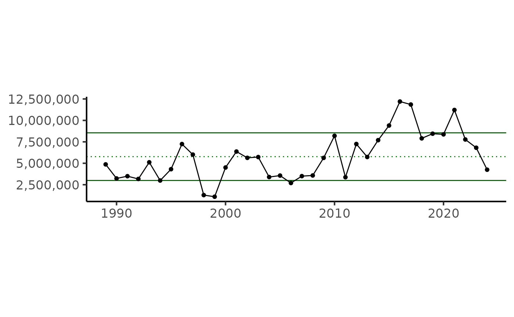
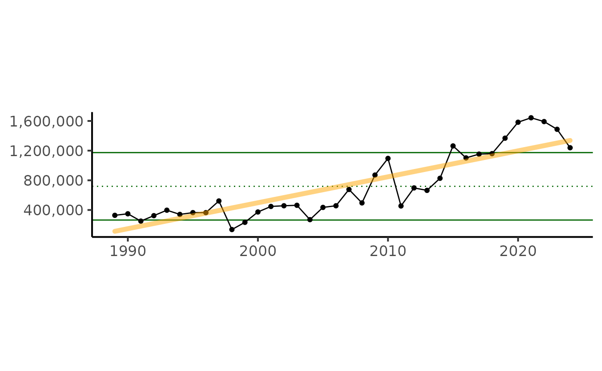
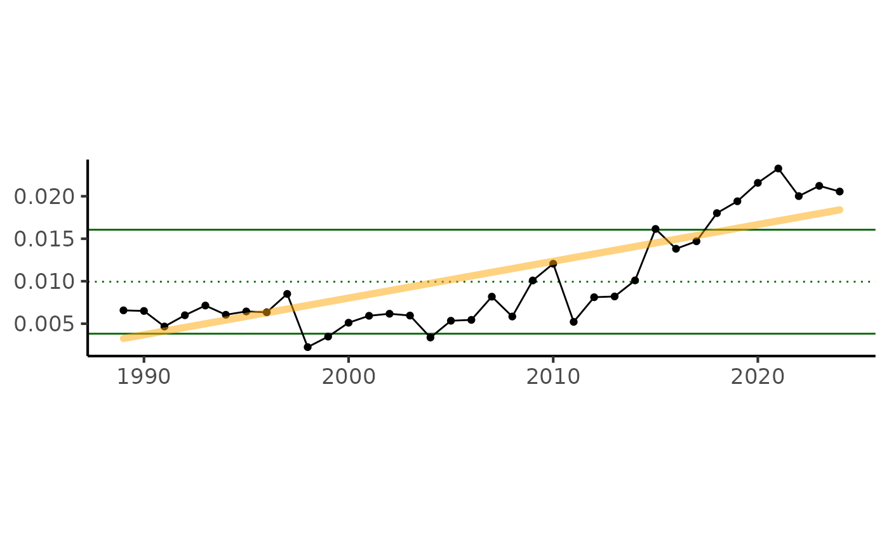

Using MRIP Data for Recreational Indicators
Stephanie Owen
Source:vignettes/using_mrip_data.Rmd
using_mrip_data.RmdObtaining Raw MRIP Data
Data pulls from NOAA Fisheries’ Marine Recreational Information Program (MRIP) can be done through the MRIP Query Tool (https://www.fisheries.noaa.gov/data-tools/recreational-fisheries-statistics-queries).
At this time, queries must be saved as a csv and loaded into R. The raw data includes lines of metadata and description and does not format nicely. The following lines of code remove the extra information and modifies the remaining data into columns while reading in each csv file. The files used in this vignette are found in the ‘data-raw’ folder in this package.
Catch, landings, and effort data can be read in as one file with multiple years. Directed trips must be downloaded for each year of interest.
# catch data
mrip_catch <- read.csv(here::here('data-raw/mrip_BLACK_SEA_BASS_catch_series.csv'),
skip = 46, # of rows you want to ignore
na.strings = ".") |>
janitor::clean_names(case = "all_caps")
# landings data
mrip_landing <- read.csv(here::here('data-raw/mrip_BLACK_SEA_BASS_harvest.csv'),
skip = 46, # of rows you want to ignore
na.strings = ".") |>
janitor::clean_names(case = "all_caps")
# effort data
mrip_effort <- read.csv(here::here('data-raw/mrip_effort_series.csv'),
skip = 44, # of rows you want to ignore
na.strings = ".") |>
janitor::clean_names(case = "all_caps")
# trips files
path = (here::here('data-raw/mrip_directed_trips'))
files <- list.files(path = path,
pattern = utils::glob2rx('mrip*.csv'),
full.names = TRUE)This vignette shows example data pulls and plots used for the 2025 black sea bass ESP report card: - Total Recreational Catch - Total Recreational Trips - Recreational Effort (proportion of trips targeting black sea bass) - Total Recreational Landings
Run MRIP functions and plot time series
The code for functions referenced here can be found in ‘create_recreational_indicators.R’ and ‘plot_indicator_ts.R’.
Black Sea Bass Recreational Catch
Query ‘Time Series’ under ‘Catch Data’.
Choose years of interest, summarize by Annual, Calendar Year, Atlantic coast by state, Black Sea Bass, all modes and areas, Total Catch
Download csv as output
total_rec_catch <- create_total_rec_catch(mrip_catch)
plt_indicator(total_rec_catch)## Error in loadNamespace(x) : there is no package called 'arfit'## Warning: Computation failed in `stat_lm()`.
## Caused by error in `linear_ar1$pValue`:
## ! $ operator is invalid for atomic vectors
Black Sea Bass Recreational Landings
Query ‘Time Series’ under ‘Catch Data’.
Choose years of interest, summarize by Annual, Calendar Year, Atlantic Coast by State, Black Sea Bass, all modes and areas, Harvest (A + B1), choose # of fish/weight (lbs), mean length and weight
Download csv as output
total_rec_landings <- create_total_rec_landings(mrip_landing)
plt_indicator(total_rec_landings)## Error in loadNamespace(x) : there is no package called 'arfit'## Warning: Computation failed in `stat_lm()`.
## Caused by error in `linear_ar1$pValue`:
## ! $ operator is invalid for atomic vectors
Black Sea Bass Total Recreational Trips
Query ‘Directed Trip’ under ‘Effort Data’.
Choose year of interest, summarize by Annual, Calendar Year, Atlantic coast by state, Black Sea Bass, all modes and areas, Primary Target
Download csv as output
rec_trips <- create_rec_trips(files = files)
plt_indicator(rec_trips)## Error in loadNamespace(x) : there is no package called 'arfit'## Warning: Computation failed in `stat_lm()`.
## Caused by error in `linear_ar1$pValue`:
## ! $ operator is invalid for atomic vectors
Black Sea Bass Recreational Effort
Note: must run ‘create_rec_trips’ prior to obtain ‘rec_trips’ dataset.
Query ‘Time Series’ under ‘Effort Data’.
Choose years of interest, summarize by Annual, Calendar Year, Atlantic Coast by State, all modes and areas
Download csv as output
prop_sp_trips <- create_prop_sp_trips(total_trips = mrip_effort,
species_trips = rec_trips)
plt_indicator(prop_sp_trips)## Error in loadNamespace(x) : there is no package called 'arfit'## Warning: Computation failed in `stat_lm()`.
## Caused by error in `linear_ar1$pValue`:
## ! $ operator is invalid for atomic vectors